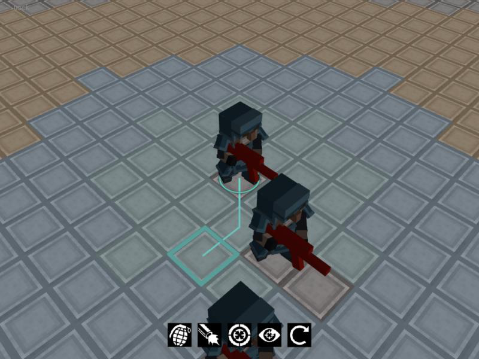
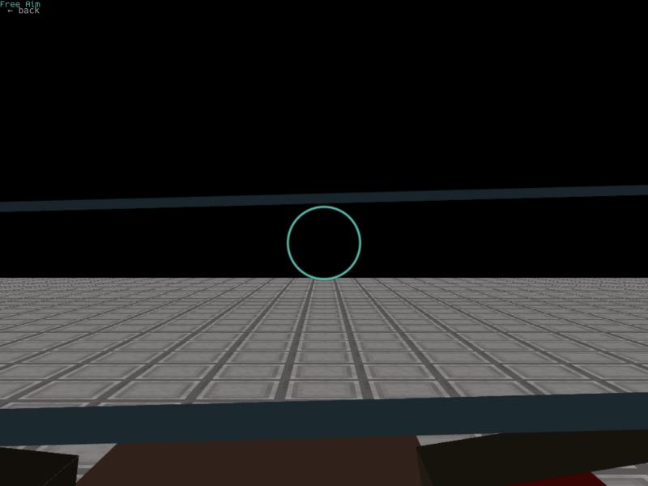

Voxel Combat Revolved
Completion ▰▰▰▱▱▱▱▱▱▱ 30% · core combat works, the big vision does not
Voxel Combat Revolved is my love letter to X-Com. I have played the 1994 original and the Firaxis reboots a lot, but I never liked the abstract hit-chance system. So I took the XCOM-style turn-based squad combat, brought back real ballistics like the original had, and added the free-aim mode I loved in Phoenix Point.
All of that happens in a Minecraft-style block world where the terrain is destructible, so a rocket launcher really changes the map. I wrote the engine myself in Go on top of plain OpenGL, with GLTF character models, animations, baked lights and an action cam.
Multiplayer was the point from day one: the game is a client/server design, and even a single-player match quietly spawns a server and a headless AI client. It is still a prototype, but you can already move soldiers, aim freely and blow holes in walls.
Features
- Turn-based squad combat on an isometric grid, with action points, pathfinding (Dijkstra) and climbing/dropping between levels
- Free aim: drop into first person and shoot at whatever you want, bullets are ray-traced against blocks and individual body parts
- Destructible Minecraft-style block terrain with greedy-ish chunk meshing and automatic re-meshing in the background
- Weapons: rifles, shotgun, sniper, pistol, rocket launcher; throwables including smoke grenades
- Overwatch reaction fire and a "pressure" system that hurts sniper accuracy when enemies are close
- Client/server from the ground up over TCP; single player spawns a server and a headless AI client
- Two mission types: deathmatch and "defend" (protect objectives for a number of turns), random or manual unit placement
- GLTF soldier models with animations, blood particles, decals, baked lights and an action cam
- Built-in map editor, maps load from Amulet/Minecraft-style construction files
Under the hood
The whole overwatch rule set is one struct with comments doing the game design (game/game_instance.go):
MaxPressureDistance: 4,
MaxOverwatchRange: 20,
OverwatchAccuracyModifier: 0.8, // 20% penalty for overwatch shots
OverwatchDamageModifier: 1.1, // 10% bonus damage for overwatch shots
IsRangedAttackTurnEnding: true,Pressure: every enemy you can see within 4 blocks pushes on you, and snipers pay for it directly in accuracy (game/game_instance.go):
if unit.HasWeaponOfType(WeaponSniper) {
// add penalty for sniper shots under pressure
pressureOnUnit := r.engine.GetTotalPressure(unit.UnitID())
pressureOnUnit = util.Clamp(pressureOnUnit, 0.0, 1.0)
pressureModifier = 1.0 - pressureOnUnit
}The AI opponent is honest about its ambitions. If no enemy is in sight it walks four blocks forward, next turn four blocks back (game/ai.go):
moves := int32(4)
if c.turnCounter%2 == 1 {
moves *= -1
}
...
// HACK: assume this works
unit.SetBlockPositionAndUpdateStance(chosenDest)The engine has its own GJK + EPA collision code (engine/util/gjk.go, gjk_epa.go) and a 3D DDA voxel raycaster (engine/util/dda_raycast.go), all written from the blog posts linked in notes.txt.
A small confession in notes.txt while learning the matrix math:
-> (AB)^-1 = B^-1 * A^-1 damn..Ideas & inspirations
The readme is blunt: X-Com 1994 for its ballistics (with a link to the LOFTEMPS.DAT page on UFOpaedia), Firaxis XCOM for the structure minus the hit-chance system, Phoenix Point for free aim, and UFO2000 as the multiplayer precedent ("We already had most of this").
notes.txt is a long design diary. It has a section "Flaws of turn-based XCOM style games in general" (boring movement, nothing to do in the enemy turn, the stormtrooper effect) and one on "Where Phoenix Point failed". Design goals include deception and Yomi, reading the opponent's mind, with a counter for every move: dodge, deflect, parry, harden. There is a pasted Sun Tzu excerpt to go with it.
Planned but not built: doors and chests, melee, health bars, skills, armor, bleeding out, a bullet cam for sniper shots, moving maps on trains or starships, and "Blood God bonus". The readme setting promises "Draft a team, Build a base, Exterminate the alien threat", none of which exists beyond the fight. The notes also flirt with giving up: "Switch to Godot?" and "Or Minetest?".
Where it started, where it ended
The first commit on 2023-07-25 was isometric view angles and mouse picking, then "basic unit movement is working. kind of". Within ten days I had networking ("enabled virtual networking inside the same process", then TCP) and the first networked line of sight. So multiplayer really was there from the start.
By the last proper commit on 2023-11-02 ("latest version") it had grown free aim, big units, smoke, throwables, pistol and rocket launcher, the defend mode, baked lights and an action cam. The commit messages are mostly "poc for ..." and that is honest: lots of systems proven, few finished. The two commits from 2026 only add the browser (WebAssembly/WebGL2) build.
State of the repo
Untouched from November 2023 until the 2026 web port. It builds (there is a GitHub Actions workflow and build scripts for server, client, standalone, Windows and web). There are about 17 TODO/HACK comments, mostly small: blood decals on unit skin, frustum culling, "destroy weapon if damage is too high". notes.txt lists open bugs, e.g. you cannot look inside buildings with roofs.
The combat core is there. The game around it, meaning the campaign, base, drafting, proper AI, lobby polish and most of the design notes, is not. I would say about 30% of what I set out to make.
Is it a real game?
Playable demo. A match has a real ending: the server declares a winner when one side has no active units left, or in defend mode when the objectives are destroyed or the turn limit runs out. But the AI shuffles back and forth until it sees you and then shoots, so a match against it is over in a few minutes, and there is nothing after it. Against a human over the network it holds up better.
Screenshots



Latest updates
- 2023-11-02 Latest version
- 2023-10-04 Animation polish and bugfixes
- 2023-09-29 Baked lights proof of concept
- 2023-09-27 Asset switch
- 2023-09-19 Proof of concept for the action cam
- 2023-09-17 MVP for pistol and rocket launcher